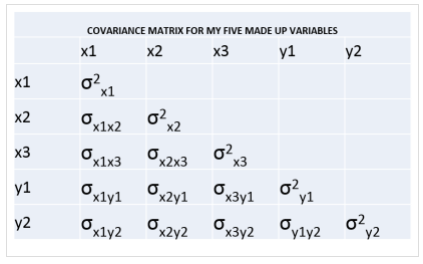
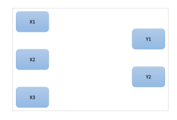

做结构方程（SEM）的时候，通常会进行卡方检验， 它是用来检验模型是否符合数据的。
意思是当卡方检验不显著的时候， 我们认为我们的模型是良好的， 能够反映数据的。
卡方检验的自由度是比较难以理解的， 但是又往往受到很多学生的关注， 每次被问到自由度是什么的时候，
往往我们需要很长的解释， 所以在这里我就尝试用一个例子来解答一下什么是结构方程的自由度。
结构方程的输入数据-方差协方差矩阵
结构方程的输入数据其实是方差和协方差矩阵， 不管你用mplus还是amos， 还是其他任何结构方程估计软件就，
这些软件初始的输入数据都是方差和协方差矩阵。 虽然你常见的数据是原始的观测数据， 就是用列来表示变量， 行代表观测记录的数据。
结构方程软件就是从这样的数据计算方差和协方差矩阵， 然后才进行结构方程参数的估计。
那么，什么是方差协方差矩阵？ 如下：
这个矩阵中， 对角线上的元素变量的方差， 其他元素是协方差。 方差大家很熟悉， 代表著变量的变异大小， 或者叫做单位的大小；
协方差代表变量之间的关系， 所以当我们说协方差的时候， 都会说变量A和变量B的协方差是多少， 标准化的协方差就是相关系数，
所以你就可以理解， 协方差代表了变量之间的关系。
通过协方差矩阵， 我们就可以了解到变量的变异大小和变量之间的关系。 而结构方程模型就基于方差协方差矩阵来构建一个模型，
模型越好越能反映这个方差和协方差矩阵， 卡方检验虚无假设就是我们构建的模型所模拟的方差协方差矩阵与样本的方差协方差矩阵没有显著差异。
所以当卡方检验不显著的时候， 我们认为我们的模型可以正确反映样本数据所体现的变量关系。
我们的案例
我们的数据有5个变量， 变量名是 X1 X2 X3 Y1 Y2 ， X代表自变量， Y代表因变量，
所以我们打算做一个这样的模型：
我们用下面的代码做分析：
1 | Title: Degrees of freedom example |
重点是在Model这部分， 定义了自变量和因变量， 以及两个因变量之间有相关；
下面我们进入正题， 我们关注的是卡方检验及其自由度， 在结果里面有：
1 | Chi-Square Test of Model Fit |
那么为什么这里的自由度是1？
自由度的计算方法是观测数减去参数个数， 我们知道原始数据就是协方差矩阵， 那么观测数是多少呢？数一数协方差矩阵就知道， 有15个观测数；
参数有多少个呢？ 其实参数就只有两种：
- 方差
- 关系
有5个变量就有5个方差，
关系分为三种：
- 自变量与自变量之间的关系（3个）
- 自变量与因变量的关系 （5个）
- 因变量与因变量的关系 （1个）
所以， 参数的数量就是 5 + 3 + 5 + 1 = 14， 那么自由度df= 15 - 14 = 1
下面再做一个练习， 我们算一下空模型的自由度。
空模型 null model
下面就是空模型：很简单，变量之间没有关系， 也就没有参数
为什么它叫做空模型呢， 为了帮助你记忆， 就是看下mplus定义空模型的代码：
1 | Title: Degrees of freedom example - Empty model |
在Model这部分， 我们没有定义内容， 所以这部分是空的（null）， 所以这叫做空模型。
空模型的特点就是， 这个模型的参数只有变量的方差， 所以自由度是多少呢？ 就是 df = 15 - 5 = 10
基线模型 baseline model
我们介绍了空模型， 但是你会发现， mplus还会输出 baseline model 的卡方检验的结果。
什么是基线模型呢？ 它有如下定义：
- 自变量对因变量的路径系数是0， 自变量和因变量没有关系
- 因变量之间的协方差都是0， 因变量之间没有关系
- 自变量对因变量的路径系数受到自变量之间协方差的影响，所以自变量的协方差是算参数的
因此， 根据我们的模型， 我们用到了如下数据：
- 橙色是变量的方差
- 红框是自变量之间的协方差
那么基线模型的自由度是多少呢？ 15 - 5 - 3 = 7
这个结果与mplus输出的结果一样：
1 | Chi-Square Test of Model Fit for the Baseline Model |
为了方便理解， 我们提供了基线模型的mplus代码：
1 | Model: y1 on x1@0 x2@0; |